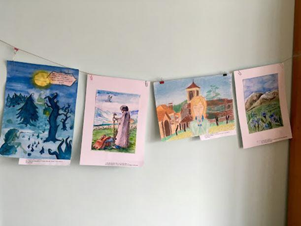
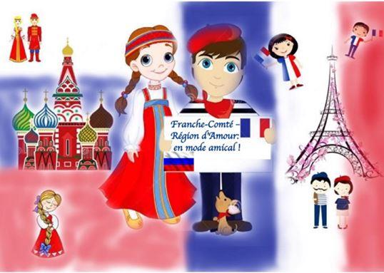

La langue française en Russie a une très longue histoire. C’est grâce au français que l’image de la France qui se développe dans la culture russe au XVIIIe et au XIXe siècles. Il est largement parlé dans la société russe à l’époque grâce à l’influence culturelle française. Elle acquiert surtout un rôle social particulier au sein de la culture aristocratique – le rôle d’un signe social marquant l’appartenance à la noblesse.
Aujourd’hui, le français cède son prestige à l’anglais qui est pour la plupart des élèves la langue de leur avenir et de leur travail. La grande majorité des Russes préfère apprendre une première et pour beaucoup une seule langue jugée omniprésente, universelle, répandue à l’échelle mondiale. Aux yeux des Russes le monde est anglophone, la langue clé d’aujourd’hui est l’anglais. Cette situation est due en grande partie à l’évolution de l’informatique, à l’américanisation de la vie culturelle, surtout de la jeunesse.
Le français n’est plus la langue privilégiée pour la plupart des Russes. Il a reculé en tant que la première langue étrangère. Il partage actuellement presque la même position avec l’allemand, les langues étrangères étudiées dans le système scolaire russe en nombre d’apprenants, après l’anglais.
Il est à noter pourtant, que ces dernières années, on remarque un nouvel intérêt envers le français, la France et la culture de ce pays. Après 1989, date à laquelle les écoles ont obtenu le droit d’établir elles-mêmes leurs programmes, beaucoup ont introduit le français comme la deuxième langue.
Depuis 2014 toutes les écoles secondaires ont adapté leurs programmes d’enseignement au nouveau standard éducatif national qui prévoit (à part d’autres changements) l’introduction obligatoire d’une seconde langue. Chaque école peut choisir une langue à proposer aux élèves : dans notre ville on enseigne le français, l’allemand ou le chinois. Tout dépend de la qualification des professeurs des langues étrangères qui travaillent déjà dans les écoles, car tous les enseignants russes sont toujours spécialisés en deux langues : l’anglais et une autre.
Le français est donc enseigné en tant que seconde langue depuis la classe de 5e, c’est la première année de l’école secondaire en Russie (l’équivalent du collège français).
Aujourd’hui en Russie il y a des centres culturels français, un réseau des Alliances Françaises dans les villes différentes à travers toute la Russie, des spectacles et des séminaires sont organisés pour les amoureux de la langue française. L’Institut Français en Russie contribue au développement de la coopération décentralisée culturelle et éducative entre les partenaires français et russes. Chaque année, de nombreux événements organisés ou soutenus par l’Institut Français de Russie offrent aux francophones la possibilité d’exercer leurs talents.
L’échange culturel renforce la compréhension mutuelle entre nos deux peuples et nous aide à mieux nous comprendre. Le dialogue entre les cultures russe et française constitue une vraie richesse, la richesse de l’esprit.
Apprendre le français en s’amusant
Moi, je travaille en tant que formatrice des futurs professeurs de français depuis 2002. J’enseigne des disciplines telles que FLE, didactique du FLE, civilisation française, stylistique française, etc. à l’Université pédagogique d’État de Blagovechtchensk (BGPU).
Il faut dire que le français a toujours été bien présent dans les universités pédagogiques de Russie. Même si le nombre d’étudiants diminue, la formation des professeurs pour les écoles secondaires continue malgré toutes les crises que Russie traverse toujours. Et si dans les années 90, à l’époque où j’étais étudiante, il y avait à peu près une dizaine de professeurs francophones et une chaire à part les réunissant, aujourd’hui nous sommes seulement trois « françaises » et nous faisons dorénavant partie de la chaire des langues germano-romanes et orientales avec des collègues enseignants le chinois et l’allemand.
Depuis 2018 je suis aussi professeur de français seconde langue au lycée BGPU. Ce lycée accueille les jeunes de 14 à 18 ans et fonctionne à la base de notre université. Ils ont des cours de seconde langue étrangère (allemande ou française) deux fois par semaine, d’une durée de 40 minutes.
Il est à noter que l’éloignement de la France et d’autres pays francophones fait que les professeurs de français de notre région doivent faire un double effort pour motiver leurs élèves et leur donner l’envie d’étudier avec plaisir et avec intérêt.
Il faut toujours penser à comment rendre l’apprentissage plus attrayant ? Comment faire comprendre à mes élèves que le français est non seulement une très belle langue mélodique mais aussi utile pour leur avenir ? Les jeunes adolescents peuvent être très curieux et motivés mais ils peuvent aussi être bien paresseux et découragés. Comment les intéresser et entretenir cet intérêt d’un cours à l’autre ? D’une année à l’autre ? Et en plus, la tâche se complique par l’éloignement géographique de Blagovechtchensk. Comment faire vivre le français ici au bout du monde, sur les rives du fleuve Amour qui coule à la frontière avec la Chine et si loin de la France, le berceau de la langue française ?
Grace aux stages pédagogiques et les formations courtes que j’avais suivis de temps à autre durant 20 ans de ma carrière professionnelle, je me suis inspirée des idées des collègues des pays différents. Chaque rencontre, chaque expérience ont toujours été bien enrichissantes pour moi.
Apprendre une langue étrangère est un processus long et parfois éprouvant pour certains élèves. Petites difficultés et la nécessite de faire des efforts peuvent parfois les décourager. Nous les enseignants, nous sommes là pour les encourager et accompagner sur leur chemin vers la réussite. Je suis persuadée que travailler ferme en classe et à la maison est l’essentiel car les acquis et les compétences ne se forment pas et ne se développent pas tous seuls. Des séries des exercices de grammaire, de prononciation, de lexique (eh oui, parfois très ennuyeux !) ne sont pas à éviter pour automatiser des acquis.
Et afin de récompenser tous les efforts de mes élèves je fais de tout mon mieux pour rendre nos rencontres plus agréables, pour que leurs heures de travail passent inaperçues et pour que le français pour eux se rime toujours avec la joie, le bonne humeur, l’envie de poursuivre et réussir !
Et que les jeunes veulent-ils (à part de ne rien faire) ? S’amuser, évidemment !
Eh, bien on s’amuse !
Le jeu de rôle. Bien sûr, ceci n’a rien d’original et se fait facilement en cours pour travailler les compétences d’interaction orale. Les jeunes adorent jouer des rôles différents et s’imaginer de vrais Français dans les situations inhabituelles pour eux.
Parfois à la fin d’une série de cours sur une thématique j’organise un cours ou les élèves présentent des projets d’interaction orale réalisés en commun par deux-trois personnes. Leur objectif est de mettre en scène un petit « spectacle », un extrait d’une émission de télé ou d’une conférence de presse, tout en utilisant dans leurs discours le vocabulaire de la thématique étudiée, des informations des textes et des articles lus. Et les élèves n’hésitent pas à se déguiser, à apporter des objets divers pour être le plus expressifs possible dans leurs rôles. Et ils rient, et ils s’amusent en parlant français dans une ambiance décontractée et conviviale. N’est-ce pas c’est notre objectif ?
On dessine. Je préfère parfois faire le bilan d’une thématique étudiée en faisant dessiner les élèves et après en faire une présentation orale en forme d’un monologue. Nous dessinons toute sorte d’affiches et de pancartes ou de publicités sociales : une affiche anti-tabac ou anti violence éducative, une pancarte écologiste, un slogan défendant l’égalité homme-femme…Parfois on dessine des fantaisies, comme un cours d’école de mes rêves ou portrait d’un professeur idéal.
On peut aussi dessiner ensemble avec des classes des écoles étrangères. En 2019 nous avons réalisé un projet « Je dessine la paix » : deux classes des écoles maternelles de Blagovechtchensk et de Valence en France ont dessiné « La Paix », chacune accompagnée par leurs professeurs. Après en échangeant leurs réalisations par la poste, nous avons organisé des expositions, d’abord en France, puis en Russie. C’est tellement passionnant de voir l’imagination de la paix des petits élèves russes et français !
Dessiner des poèmes ? C’est aussi inspirant ! En 2018 nos élèves et étudiants ont dessiné leurs fantaisies inspirées par les poèmes du poète français Francis Jammes dont 180e anniversaire était fêté cette année-là. Tous les dessins ont été envoyés par la poste au musée Francis Jammes, installée dans sa maison natale à Orthez (France) et y ont été exposés par les responsables du musée, de l’Association Francis Jammes.
On fait du théâtre. Un jour nous avons réalisé un projet « Artistes sans frontières » en commun avec le collège Anne Marly à Brest. Nous avons mis en scène un spectacle « Inspecteur Toutou ». Ensemble ! Mais chaque école l’avait réalisé sur sa scène. Combien il était intéressant de découvrir les vidéos des spectacles et voir les différentes visions de la mise-en-scène, des personnages, des costumes, des décors, du jeu des artistes !
On fait de l’écriture créative. Il est tout à fait possible de créer un journal voyageur conjointement avec des classes francophones des pays différents en le faisant voyager autour du monde. Tout comme nous l’avons fait en avec des classes du Canada (dans deux provinces au bord du pacifique et au bord de l’Atlantique), une classe de France et une classe de la région Amourskaya à l’Extrême-Orient de Russie. Chaque classe se présentait, dessinait, mettait des photos et envoyer le journal à l’adresse d’une classe qui, elle, remplissait ses pages avant d’envoyer le tout plus loin.
Les élèves de nos lycées et écoles échangent beaucoup de cartes postales avec les élèves francophones des pays du monde. Ceci est dans le cadre des projets différents. Par exemple, en 2016 nous avons envoyé les cartes avec des vues de Blagovechtchensk vers quatre points du monde à l’occasion de l’anniversaire de notre ville. « Parlons de Blagovechtchensk aux cinq continents ! », tel était le nom du projet. En réponse à notre geste nous avons reçu des cartes postales de la part des lycéens du Cuba, du Paraguay, de Thaïlande, d’Algérie et de France.
On chante ! Avant j’avais du mal à « sacrifier » des minutes précieuses des cours (je n’en ai que 40 qui passent à une vitesse incroyable !) aux divertissements tels que la chanson, par exemple. On chantait rarement avec mes élèves. Mais ces derniers temps j’ai changé d’avis et à notre joie partagée nous passons une dizaine de minutes a chanter le vendredi, une fois par semaine. Et c’est un grand plaisir pour tout le monde ! Inutile de parler longuement du rôle de la chanson pour tous les aspects d’apprentissage et pour la motivation des élèves…
On réalise des projets culturels et éducatifs. Ces projets réunissent généralement des classes de deux pays : soit de Russie et de France, apprenant le français et le russe langues étrangères, soit des classes des autres pays apprenant le français. On échange de petites vidéos pour faire connaissance, parler de ses gouts et préférences ou de ses animaux de compagnie, faire visiter son lycée ou sa ville a ses amis étrangers, etc. On pratique l’expression et la compréhension orales, et en plus, on fait découvrir son pays et sa culture aux autres, tout en surmontant des barrières psychologiques de parler devant la caméra. Il faut aussi ajouter que ces documents vidéo nous gardent de bons souvenirs sur notre vie francophone bien remplie et intéressante !
Ainsi septembre 2018 le projet « Région Amourskaya-Franche-Comté : en mode amicale » vit et prospère grâce à l’enthousiasme et un grand intérêt pour les langues et cultures des élèves du lycée BGPU a Blagovechtchensk et l’école 7 de Tsiolkovski (région Amourskaya) et du collège Victor Hugo, du lycée Louis Pergaud Besançon (France).
Ils échangent des lettres, cartes postales, petites vidéos sur les thématiques différentes étudiées en cours de langue ou sur d’autres sujets qui les inspirent. De nouveaux participants, débutants en russe et en français rejoignent le projet chaque année.
Cette nouvelle année 2021 a débuté avec une visite virtuelle du lycée proposée par les élèves de Blagovechtchensk. Ils ont présenté leurs enseignants, parlé de leurs disciplines préférées et de leurs passions en sciences et langues. Ils ont raconté un peu l’histoire du joli bâtiment où se trouve le lycée en accompagnant les visiteurs virtuels dans les corridors et les classes. Ils les ont ensuite emmenés dans le café ou les lycéens et les étudiants adorent prendre du thé avec des petits pains et des biscuits.
La patinoire de l’université accueille les lycéens (pour leur grande joie !) en hiver pour les cours de culture physique. Et tous les musées sont aussi ouverts pour les lycéens. Cette fois-ci c’est le musée géologique ou on peut apprendre plein de choses intéressantes et voir des minéraux et des pierres précieuses.
Apprendre le français en s’amusant et avoir de très bons résultats est tout à fait possible !
O.K.
Vous pouvez lire plus sur nos activités francophones sur le site de l’Association des enseignants de français de la région Amourskaya
Partager cette page